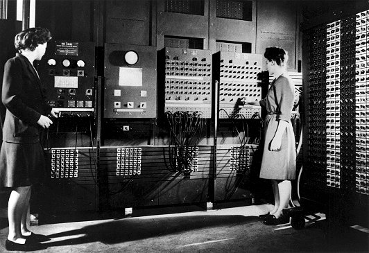
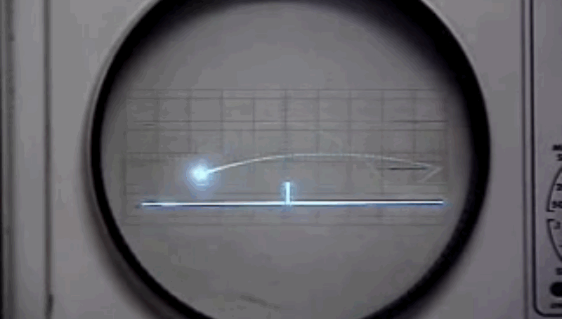
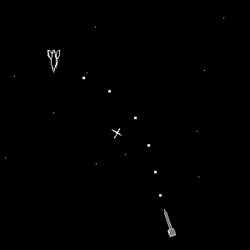

Tot comença en la dècada dels quaranta, durant la Segona Guerra Mundial el britànic Alan Turing en companyia de l'estatunidenc Claude Shannon, van treballar en el desxifrat dels codis secrets dels submarins O-boot alemanys.
Això estableix les bases de la teoria moderna de la computació, i una vegada finalitzada la guerra les principals potències vencedores van iniciar una carrera tecnològica per construir els primers superordinadors programables com l'ENIAC, un enorme ordinador que ocupava una superfície de 167 m² i pesava 27 tones.
Però hi ha una cosa ben clara, els inicis de tot es troben amb OXO el 1952 i Tennis for two el 1958.
OXO o Nought and Crosses, era un joc desenvolupat per Alexander S. Douglas en 1952. Es tractava d’una versió automatitzada del creu i ratlla que s'executava sobre l’EDSAC (ordinador de l'època) i permetia enfrontar al jugador contra la màquina.

Tennis for Two, va ser creat per William Higginbotham, aquest joc utilitzava un programa per al càlcul de trajectòries i un oscil·loscopi per simular un partit de tennis de taula. Això ho va idear per a entretenir als visitants del Brookhaven National Laboratory.
Quatre anys després de l’aparició de Tennis for two (1962). El primer videojoc d’ordinador, Spacewar! Va veure la llum al MIT (Massachusetts Institute of Technology). Aquest videojoc consistia en dues naus armades sent controlades per dos jugadors amb l’objectiu de vèncer a l’altre.
Spacewar! Va tenir un gran èxit a escala universitaria però no va arribar més lluny, a més el joc no va ser patentat pel seu creador convertint-se en el joc més copiat de la història.
